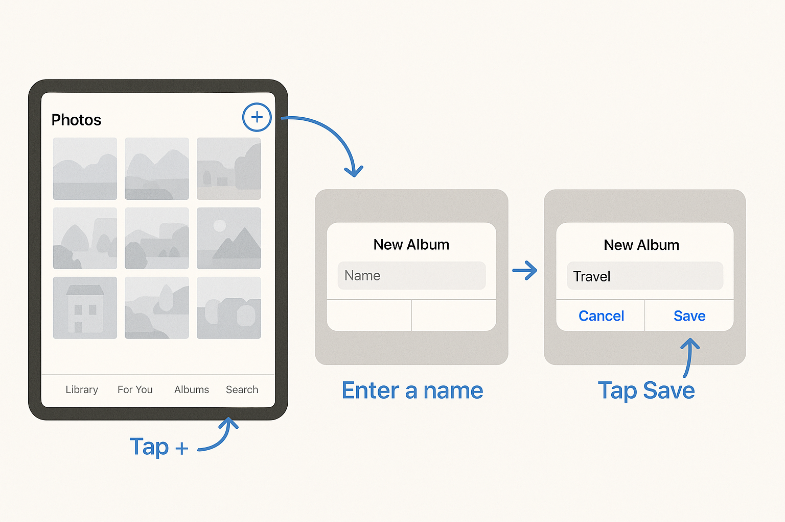
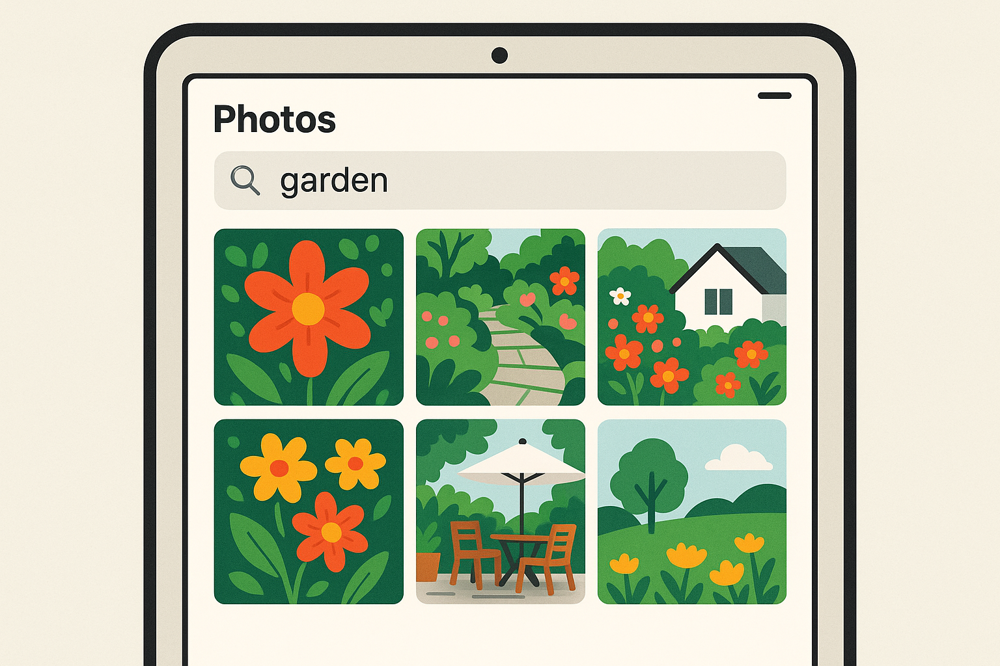

Organizing Family Photos on iPad – North York Tech Tips for Seniors

Your iPad holds years of precious memories — this guide will help you organize them so you can enjoy them anytime.
If you're like most of the seniors I help in North York and Willowdale, you've taken thousands of photos on your iPad over the years. Birthday parties, holiday dinners, grandchildren's milestones, vacations, flowers from the garden — your iPad has become a digital photo album filled with precious memories.
But here's the problem: finding a specific photo in a sea of thousands can feel impossible. You know you took that photo of the grandkids at the park last summer, but scrolling through endless thumbnails trying to find it? That's more frustrating than helpful.
The Photos app on your iPad is actually a powerful tool for organizing your pictures — most people just don't know how to use its features. Once you learn a few simple tricks, you'll be able to find any photo in seconds, create beautiful albums organized by event or person, share pictures with your family effortlessly, and even free up space on your iPad without losing a single memory.
This guide will walk you through everything, step by step. We'll start with the basics — understanding how the Photos app works — and build up to more advanced features like shared family albums and automatic organization. Everything is explained in plain English, and each step includes clear instructions you can follow along with on your own iPad.
Let's turn that overwhelming camera roll into an organized collection you'll love looking through.
Understanding Your Photos App
First, let's get oriented. Open the Photos app on your iPad. It's the icon that looks like a colorful flower (sometimes called a pinwheel) — it comes pre-installed and can't be deleted.
At the bottom of the screen, you'll see several tabs. Here's what each one does:
- Library — Shows ALL your photos in order from newest to oldest. This is your complete collection.
- For You — Apple automatically creates "Memories" and highlights from your photos. These can be surprisingly nice — it's like having a personal photo editor.
- Albums — This is where your organized albums live. Think of albums like file folders for your photos.
- Search — A powerful tool that lets you search for photos by what's in them (like "dog," "beach," or "birthday cake") or by the person in them.
Step 1: Create Your First Photo Album
Albums are the foundation of photo organization. They work just like physical photo albums — you choose which photos go in which album. Here's how to create one:
- Tap the "Albums" tab at the bottom of the screen
- Tap the "+" button in the top-left corner
- Tap "New Album"
- Type a name for your album (for example: "Christmas 2025" or "Grandchildren" or "Garden Photos")
- Tap "Save"
- Your iPad will now show you all your photos so you can select which ones to add
- Tap on each photo you want to include — a blue checkmark will appear on selected photos
- When you're done selecting, tap "Add" in the top-right corner
That's it! Your album is created and filled with the photos you chose.

Creating albums is as simple as tapping the + button, naming your album, and selecting photos.
Step 2: Organize Albums into Folders
Once you have several albums, you might want to group them together. For example, you could create a folder called "Family Events" and put all your holiday and birthday albums inside it.
- Go to the Albums tab
- Tap the "+" button in the top-left
- Tap "New Folder"
- Name the folder (e.g., "Family Events," "Travel," "Grandkids")
- Tap "Save"
- To move albums into the folder, tap the "Edit" button in the top-right, then drag albums into the folder
Suggested Album Organization:
Here's a structure that works well for many of my clients:
- Folder: Family
- Album: Grandchildren
- Album: Family Gatherings
- Album: Holidays
- Folder: Travel
- Album: Florida 2025
- Album: Niagara Falls Trip
- Folder: Home & Garden
- Album: Garden Photos
- Album: Home Projects
- Folder: Important Documents
- Album: Health Cards & IDs
- Album: Receipts
Step 3: Add Photos to Existing Albums
As you take new photos, you'll want to add them to your albums. There are two easy ways to do this:
Method 1: From the Photo Itself
- Open the photo you want to add to an album
- Tap the Share button (the square with an arrow pointing up, in the bottom-left)
- Scroll down and tap "Add to Album"
- Tap the album you want to add it to
Method 2: From Your Library (Adding Multiple Photos)
- Go to your Library tab
- Tap "Select" in the top-right corner
- Tap on all the photos you want to add (blue checkmarks will appear)
- Tap the Share button at the bottom
- Tap "Add to Album"
- Choose the album
Step 4: Use Search to Find Any Photo
This is one of the most underused features on the iPad, and it's genuinely magical. Your iPad uses artificial intelligence to analyze your photos and understand what's in them. This means you can search for photos by describing what you're looking for.
Tap the "Search" tab at the bottom of the Photos app. Then type any of the following:
- A person's name — If the iPad recognizes someone's face, you can search for them by name (more on this in a moment)
- A place — Type "Toronto" or "North York" and see all photos taken in that area
- A thing — Type "dog," "cake," "sunset," "car," "flowers," or almost anything else
- A month or year — Type "June 2024" to see all photos from that month
- An event type — Type "birthday" or "Christmas" and the iPad will try to find matching photos

The Search feature understands what's in your photos — just type what you're looking for and it finds them.
Step 5: Name the People in Your Photos
Your iPad automatically detects faces in your photos and groups them together. Once you name each face, you can find all photos of a specific person instantly. Here's how:
- Open any photo that has a person's face in it
- Swipe up on the photo (or tap the ⓘ info button)
- You'll see the faces detected in the photo, shown as small circles
- Tap on a face
- If the person hasn't been named yet, you'll see a prompt to add a name
- Type the person's name (e.g., "Sarah" or "Grandma Rose")
- Tap "Done"
Once you've named someone, the iPad will find them in all your other photos too. The more photos you name, the better it gets at recognizing people. You can then go to the Albums tab → People & Pets to see all your identified faces, and tap on any person to see every photo they appear in.
Step 6: Share Photos with Family
What's the point of having beautiful organized photos if you can't share them with the people you love? The iPad gives you several easy ways to share photos with family:
Method 1: Send Individual Photos via Text or Email
- Open the photo you want to share
- Tap the Share button (square with up arrow)
- Choose "Messages" to send via text, or "Mail" to send via email
- Enter the person's name or phone number
- Add a message if you'd like
- Tap Send
Method 2: Create a Shared Album (Best for Families)
A shared album is like a digital photo album that your whole family can see and add photos to. It's one of my favourite features to set up for families in North York.
- Go to the Albums tab
- Tap "+" → "New Shared Album"
- Name the album (e.g., "Smith Family Photos")
- Tap "Next"
- Add family members by typing their Apple ID (email address) or phone number associated with their Apple account
- Tap "Create"
- Add photos to the shared album — everyone you invited will be able to see them
Family members can also add their own photos to the shared album, so grandchildren, sons, daughters, and other relatives can all contribute. Everyone's photos end up in one place.
Shared albums let your whole family contribute photos to one place — it's the modern family photo album.
Method 3: AirDrop (for Nearby Apple Devices)
If a family member is sitting next to you with their own iPhone or iPad, AirDrop is the fastest way to share:
- Open the photo(s) you want to share
- Tap the Share button
- Look for the person's name/device at the top of the share menu under AirDrop
- Tap their name to send — the photo transfers in seconds
Step 7: Delete Duplicate and Blurry Photos
Over time, your photo library can get cluttered with duplicates (the same photo saved twice) and blurry photos you meant to delete. Fortunately, your iPad can help:
Find Duplicates Automatically:
- Go to the Albums tab
- Scroll down to the "Utilities" section
- Tap "Duplicates" (if you see it — it only appears if duplicates are found)
- Your iPad shows you pairs of identical photos side by side
- Tap "Merge" next to each pair to keep the best version and delete the copy
- Or tap "Merge All" at the top to clean up everything at once
Delete Blurry or Unwanted Photos:
- Open your Library
- Scroll through and tap "Select" in the top-right
- Tap on photos you want to delete
- Tap the trash can icon at the bottom-right
- Confirm by tapping "Delete [number] Photos"
Step 8: Free Up iPad Storage Without Losing Photos
If your iPad is running out of storage space because of all your photos, there's a clever solution: iCloud Photos. This keeps full-resolution versions of your photos safely stored in Apple's cloud (online storage) while keeping smaller versions on your iPad to save space.
How to Turn On iCloud Photos:
- Go to Settings
- Tap your name at the top
- Tap "iCloud"
- Tap "Photos"
- Turn on "Sync this iPad"
- Select "Optimize iPad Storage" — this is the key setting that saves space
With "Optimize iPad Storage" turned on, your iPad will automatically manage space. When you're running low, it keeps smaller preview versions of older photos on your iPad (they still look great on screen) and keeps the full-resolution originals safe in iCloud. When you tap on a photo to view it full-size, it downloads the full version instantly.
About iCloud Storage: Apple gives you 5 GB of free iCloud storage. For most people with a lot of photos, you'll need more. Apple offers paid plans starting at:
- 50 GB — $1.29/month (Canadian dollars)
- 200 GB — $3.99/month
- 2 TB (2,000 GB) — $12.99/month
For most seniors, the 50 GB or 200 GB plan is plenty. It's well worth a few dollars a month to keep your photos backed up safely and free up space on your iPad.
Bonus: Create a Photo Slideshow
Want to show your organized photos at a family dinner? Create a slideshow!
- Open an album you want to show
- Tap the three dots (...) in the top-right corner
- Tap "Slideshow"
- Your photos will play as a beautiful slideshow with music
- Tap "Options" to change the music, speed, and transition style
- Tap anywhere on the screen to stop the slideshow
You can also connect your iPad to a TV using an Apple TV or an HDMI adapter to show your slideshow on the big screen. It makes for a wonderful after-dinner activity at family gatherings.
Troubleshooting Common Photo Problems
Problem: "iPad Storage Full" Message
If you're getting this message, try these steps in order:
- Turn on iCloud Photos with "Optimize iPad Storage" (see Step 8 above)
- Delete duplicate photos (Step 7)
- Go to Albums → Recently Deleted and tap "Delete All" to permanently remove already-deleted photos
- Delete old text messages with photos: Settings → Messages → Keep Messages → change from "Forever" to "1 Year"
Problem: Photos Look Blurry
If you turned on iCloud Photos with "Optimize iPad Storage," some photos might look slightly blurry at first when you open them. This is because the iPad is downloading the full-resolution version from iCloud. Wait a moment and the photo should become clear. This only happens when you're connected to Wi-Fi.
Problem: Can't Find a Photo I Took
Try these approaches:
- Use the Search tab — search for what was in the photo (e.g., "cake" or "park")
- Check if you accidentally hid it: Albums → Hidden
- Check Recently Deleted in case you accidentally deleted it
- Try browsing by date: in the Library tab, pinch with two fingers to zoom out and see photos organized by month or year
Problem: Can't Create a Shared Album
Shared Albums need to be turned on first:
- Go to Settings → [Your Name] → iCloud → Photos
- Make sure "Shared Albums" is turned on (green toggle)
Frequently Asked Questions
If I delete a photo from an album, does it delete the original?
No. Removing a photo from an album only removes it from that album. The original photo stays safely in your Photo Library. Think of albums as photo bookmarks — removing the bookmark doesn't destroy the photo. However, if you delete a photo from your main Library, it will disappear from all albums too.
How do I get more storage space on my iPad for photos?
The best approach is to turn on iCloud Photos with "Optimize iPad Storage" (covered in Step 8). This stores full-resolution photos in the cloud and keeps smaller versions on your iPad. Apple offers plans starting at $1.29/month for 50 GB. You can also free up space by deleting duplicates, clearing the Recently Deleted folder, and removing apps you don't use.
Can I share a photo album with my grandchildren?
Absolutely! Shared Albums are perfect for this. Create a shared album, add your grandchildren by their Apple ID or phone number, and everyone can view and add photos. It's the modern family photo album, and everyone I've set this up for in North York loves it.
Will my photos be safe if something happens to my iPad?
If you have iCloud Photos turned on, your photos are backed up to Apple's servers. If your iPad breaks, gets lost, or is stolen, your photos are safe and can be restored to a new iPad just by signing in with your Apple ID. Without iCloud, photos are only stored on the iPad itself — which is risky. I strongly recommend turning on iCloud for this reason alone.
Can I print photos from my iPad?
Yes! If you have a wireless printer, tap the Share button on any photo, then tap "Print." You can also order prints online through apps like Shutterfly or Walmart Photo. If you'd like to create a printed photo book from your iPad, the Shutterfly and Chatbooks apps are very easy to use.
Need Help Organizing Your Photos?
If you have thousands of photos and feel overwhelmed, I can sit down with you and help you create an organized system. I'll set up albums, name faces, configure iCloud, and show you how to find any photo in seconds. Many of my clients in North York and Willowdale tell me this is one of the most rewarding sessions we do together.
$45/hour with satisfaction guaranteed
Call or Text: 289-203-4346Serving North York, Willowdale, Bayview Village, Don Mills & surrounding areas
Related Articles
- How to Organize Photos on iPhone: A Complete Guide for Seniors
- How to Transfer Photos from iPhone to Computer
- Setting Up Email on iPhone for North York Seniors
- Smart Home Setup for Seniors in Willowdale and North York
- How North York Seniors Can Avoid Common Tech Scams
Anthony is a tech support specialist serving seniors in North York, Willowdale, and surrounding areas. He provides patient, in-home help with iPads, iPhones, photo organization, and more. He holds a Bachelor of Commerce from TMU and certifications in AI Engineering from IBM and Google.